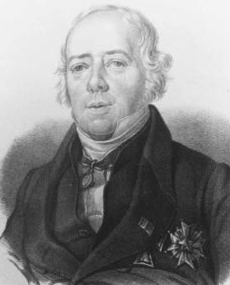
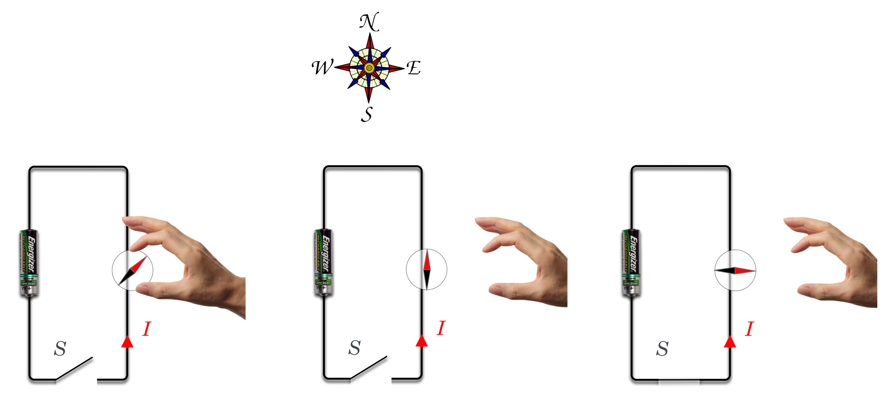
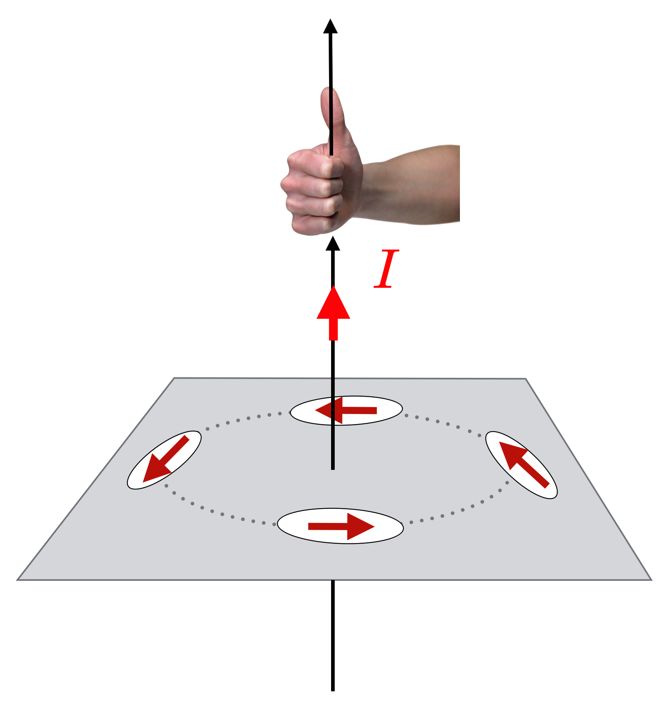
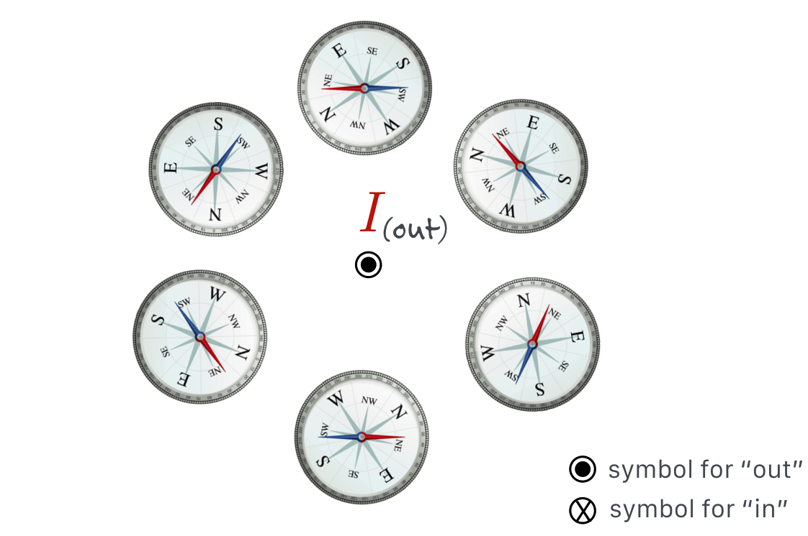
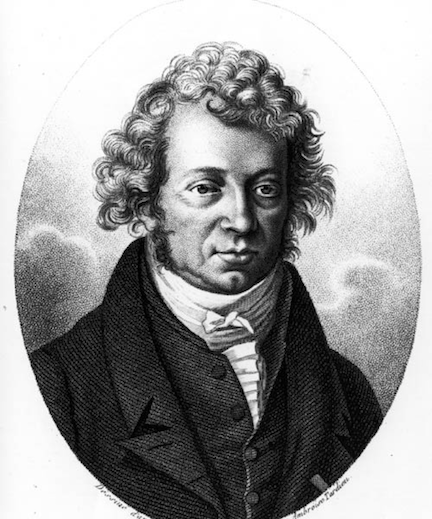
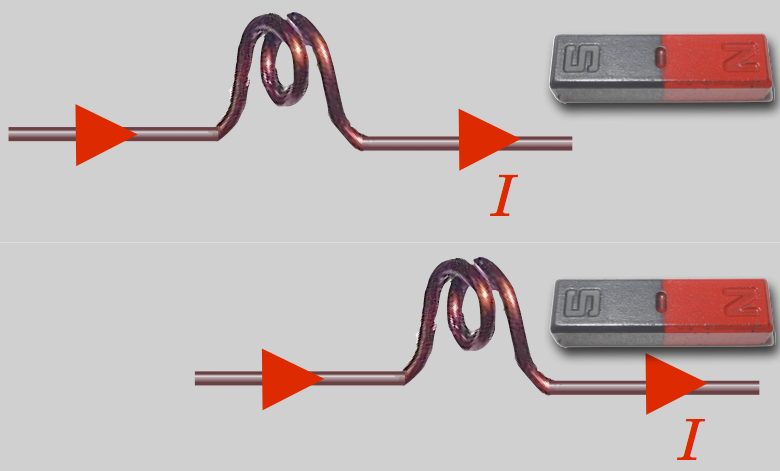
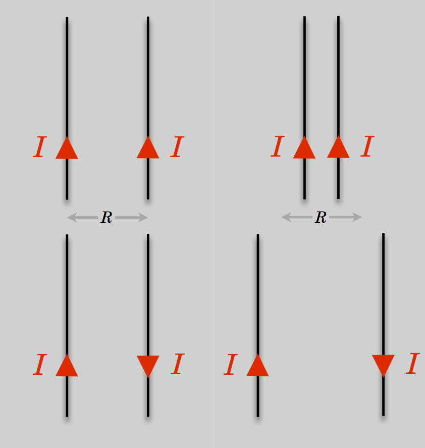

11.5. Forces from Currents: Electromagnetism#
There was a lot of patient electrical experimentation during the early 1800s. And, as sometimes happens, the historic breakthrough came by accident. Accounts differ, but those of us who lecture for a living like to think that the following version is true! As the story goes, the Danish natural scientist Hans Christian Oersted was giving a public lecture in 1819 about the heat given off by electrical currents when he made a discovery.
{kind=link}

Fig. 11.8 (Wires get hot, as you know from playing with batteries.) He generated his currents using a Volta’s Pile and for some reason had a compass on his lecture bench which was pointing to the North as compasses will do. His current-carrying wire was above it, along the North-South direction as well.#
{kind=link}

Fig. 11.9 Shown is a circuit with a switch (S) and a battery with the positive pole down. When the switch would be closed, current would flow counterclockwise. In (a) a disembodied hand brings a compass near to the wire. In (b) the compass recognizes that magnetic North is to the top of the figure and it points that way…as is the job of a compass. Then in (c) S is closed and current flows as shown and Oersted’s discovery was that the compass “forgets” all about the puny Earth’s magnetic field and responds to the current.#
When he turned on his current, the compass needle jumped and pointed to the West! With nothing up his sleeve, he had demonstrated a brand new connection between currents (charge) and magnetism:
Currents exert a force on Magnets perpendicular to the current.
I don’t know how composed Oersted remained during the demonstration, because this would have been quite a shock (no pun intended!). He finished his lecture and then went into feverish experiment-mode, studying the effect during the ensuing weeks. He found a number of surprising results. For example, the compass was not attracted to the wire. Newton’s gravitational attraction would have led one to expect that two objects which are the source of a force should be attracted directly towards one another—like the gravitational force. No, the compass needle did something unusual: it twisted.
Oersted interpreted this as a magnetic influence of the same nature as that of the earth (after all, it’s a compass) that was radiating outward from the wire. Here, he was wrong and a more careful examination of the effect – which is hard, because the force is very weak even for very large currents – shows that the magnetic influence is not radial, but circular, around the wire as shown in this sketch.
{kind=link}

Fig. 11.10 Oersted’s very careful experimentation demonstrated that a compass needle responds in a circular pattern around a wire carrying current. The direction of the north pole of the compass nee- dle can be found by using one of many “Right Hand Rules.” Here if your thumb points in the direction of the current, then your fingers curl around the wire and point in the direction of the north pole of the compass, which is shown by the red arrows. We’ll reinterpret this in terms of the Magnetic Field in the next chapter.#
{kind=link}

Fig. 11.11 When the current flows, it’s there. Turn off the current, it disappears. Reverse the direction of the current, and the other pole of the compass is attracted. There is a rule-of-thumb (again, no pun intended!) on how to identify the direction of the magnetic influence from a wire by using your right hand: the first of a handful (sorry! no pun again!) of “Right Hand Rules”: With your right thumb in the direction of a current, your fingers will curl in the direction of the magnetic influence.#
Please study Example 2:
More finger-pointing…can you predict the compass needle direction?
Oersted wrote about this effect and went on tour, demonstrating it around Europe and causing an enormous stir among natural scientists. That there was a connection between electricity and magnetism was now undeniable and this led to a number of speculations about how and under what conditions these connections might hold. The idea came more naturally to Oersted than to others because he had a particular religious belief, “Naturphilosophie,” that held that all of Nature is connected and so he was open to unification of all natural phenomena. Since the traditional way to make magnets move is with another magnet, it was apparent that what Oersted had done is demonstrate that:
Currents create a magnetic force, in a circular pattern around the current.
Please answer Question 8 for points:
Oersted’s phenomenon was demonstrated at the Académie des Sciences in Paris on September 11, 1820 and in the audience was Mariè Ampère, a troubled French mathematician. He was precocious in mathematics (and many other things)—especially calculus and the refinements of Newton’s physics. But a melancholy man, he was sad most of his life. His father had been executed during the French Revolution and although Ampère was happily married, he lost his wife in 1803 while he was away at a new teaching position. Separation from her and their young son had been especially hard, as she’d already been ill when he departed and so his guilt sent him into a gloom which stayed with him for the rest of his life. He married again, disastrously, but separated from his wife after only a year and a half with their daughter under his custody.
{kind=link}

During the week that followed that momentous autumn lecture, Ampère managed to work out and measure Orested’s effect, but he went further. He quickly constructed a delicate, current-carrying coil which could be suspended with the axis of the coil horizontal. When current flowed and a bar magnet was brought near, the coil pivoted and was attracted to or repelled from the magnet. The coil has a left and right side, like poles—you can again use your right hand and wrap your fingers in the direction of the current and your thumb will now point in the direction of a “North” pole-like direction.
So the coil of current behaves as if it were itself a bar magnet! From this he quickly hypothesized that all magnetism is due to “molecular” current coils and that there must be circular currents in the center of the Earth to produce the Earth’s magnetic field.
{kind=link}

Fig. 11.12 A current-carrying coil behaves like a magnet and is attracted or repelled depending on the direction of the current.#
A coil of wire carrying a current behaves like a bar magnet.
Not content, he went further: he further reasoned that if currents cause magnetism, then one current ought to influence another current, just like magnets influence other magnets. By producing very high currents he showed that two parallel wires experienced a force between them—attractive when the currents are parallel and repulsive when opposite:
Currents exert a magnetic force on other parallel currents causing them to attract (if the currents are aligned) or separate (if the currents are anti-aligned) .
{kind=link}

Fig. 11.13 Currents in parallel wires will create an attractive force (above) when the currents are parallel and repulsive force (below) when antiparallel.#
With his mathematical skills, he was able to work out the force on one wire due to another, which is related to what we call Ampère’s Law. He did this work extraordinarily fast and used a procedure that’s not generally used today. By November, he had a complete Model for magnetism: magnetism as due to the collective action of little, molecular currents. He came to this through experimentation as well as his mathematics. Ampère’s reputation was secure and he was able to create a course in “Electrodynamics” in which Ampère furthered his researches into the relationship between electricity and magnetism with both inspired mathematics and impressively precise experimentation. While his place in the history of physics was secure, his relationships with his surviving children were unpleasant. Consistent with his dark outlook, his son, a successful historian, and he were always at violent odds and his daughter was an alcoholic who lived with her husband in Ampère’s home. This was a life not made in heaven, one of constant turmoil, including frequent visits from the police.
We now define the unit of current, the Ampère, or “Amp” (A) by the amount of force between two wires. “The ampere is that constant current which, if maintained in two straight parallel conductors of infinite length, of negligible circular cross section, and placed 1 meter apart in vacuum, would produce between these conductors a force equal to 2 x 10-7 newton per meter of length.” (from the National Institute of Standards and Technology).